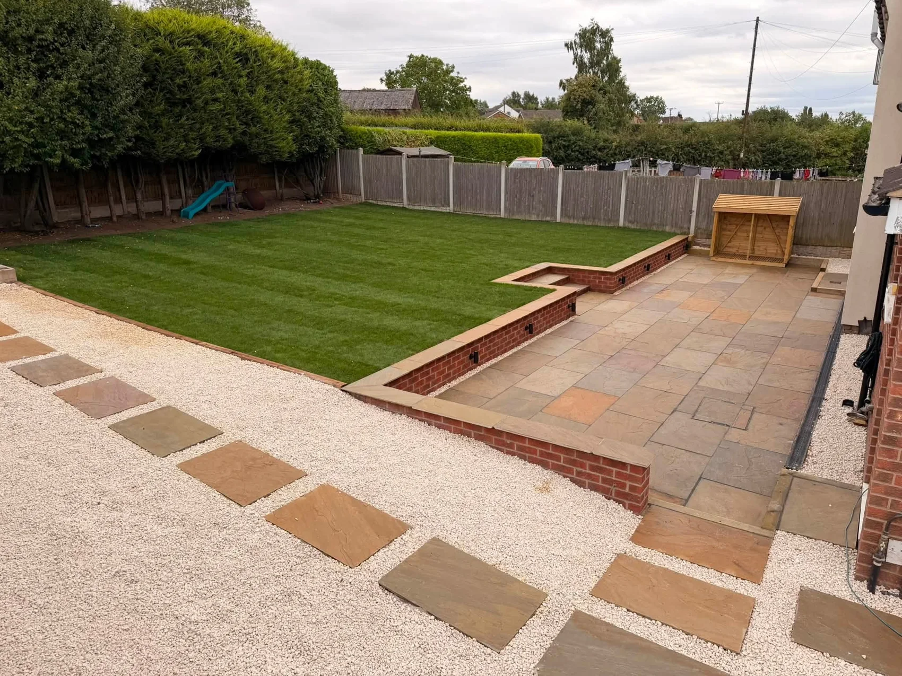
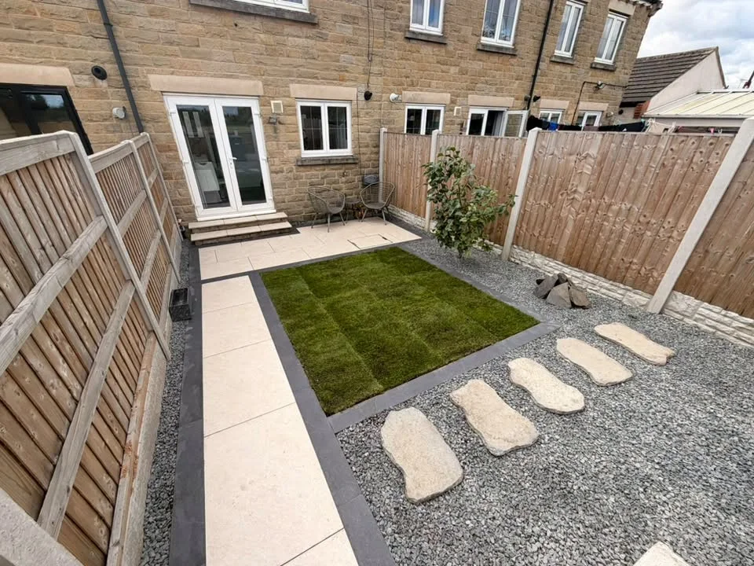
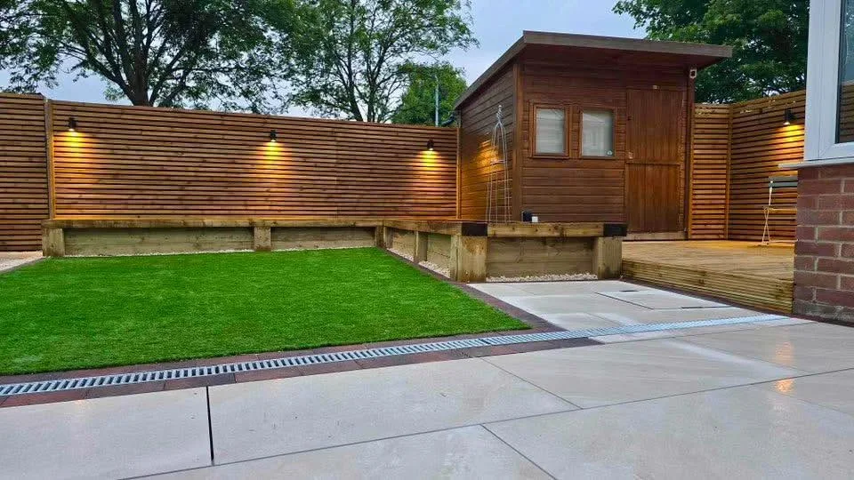
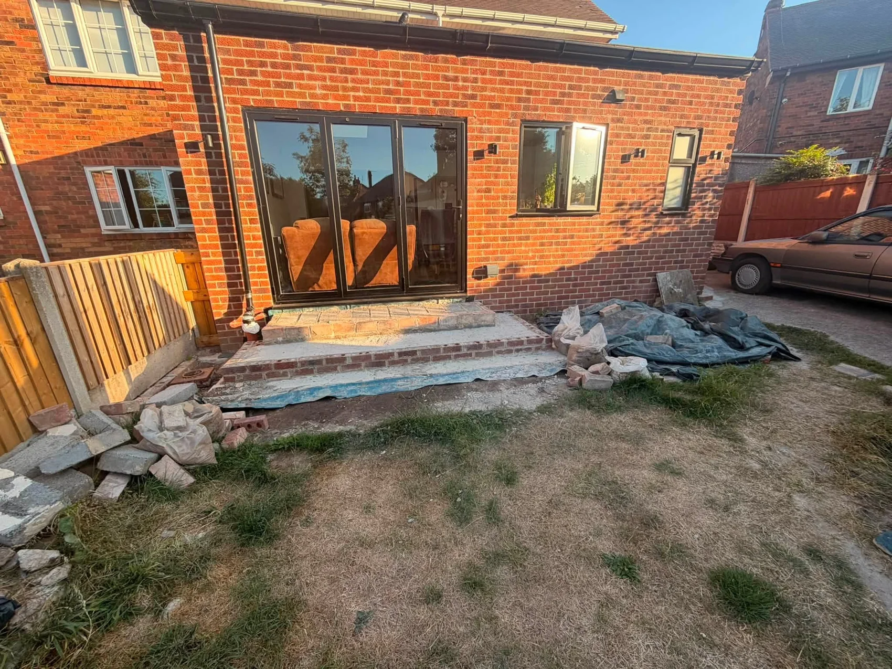
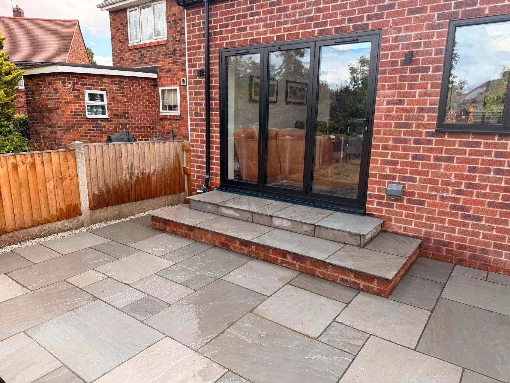

LOVE GARDENS AND DRIVEWAYS · DONCASTER
Gardens to love.
Driveways to be proud of.
Garden landscaping, patios, driveways and fencing in Doncaster and across South Yorkshire. Here to help, always.
Free, no-obligation quotesDoncaster & South Yorkshire
OUTDOOR SPACES, RECONSIDERED
Make more of your garden.
A place to sit. Space for the family. A path that connects everything together. Love Gardens and Driveways creates gardens, patios and driveways in Doncaster and across South Yorkshire.
Start with what you need from the space. We can discuss the layout, materials and details that bring it together.
Explore garden landscaping →
A DIFFERENT FEEL AFTER DARK
Details that tie the space together.
Slatted fencing, raised beds, pale paving and lawn give this garden distinct places to sit, walk and enjoy the outdoors.
Explore fencing & boundaries →

OUR PROJECTS
Spaces shaped around real homes.
Explore some of our paving, driveway and garden projects.
BEFORE & AFTER
From building work to garden-ready.
Stone-topped steps and a paved seating area complete the space outside these garden doors.


BEFORE YOU START
A few useful answers.
Where do you work?
We are based in Doncaster and work across South Yorkshire. Send your postcode so we can confirm availability for your location.
Can you help with a complete garden makeover?
Yes. We take enquiries for projects that bring together patios, lawns, fencing and other landscaping. Tell us which parts of the garden you want to change.
Can I send photographs for a quote?
Yes. Use the WhatsApp form to prepare your enquiry, then attach photos in WhatsApp before sending. You can also email photos directly.
Is a quote free?
Yes. Get in touch for a free, no-obligation quote.
FREE, NO-OBLIGATION QUOTE
Let’s talk about your outdoor space.
Tell us what you have in mind. This form opens a WhatsApp draft with all your details, ready for you to review, add photos and send.